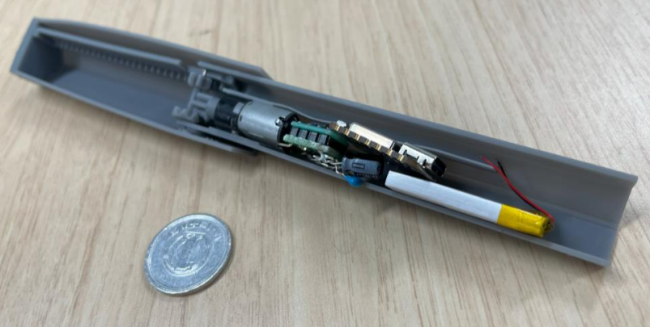
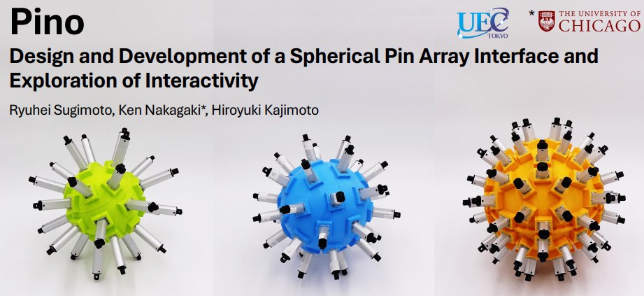
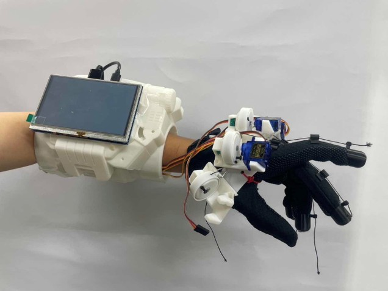

Sugiduino
Creative Technologist / Developer
Works

再構成可能なピンアレイデバイス
形状変化可能なピンアレイディスプレイシステム。機械的な構造により様々な形状を再現し、触覚フィードバックと視覚情報を組み合わせた新しいインターフェースを実現します。

球体ピンアレイインターフェース
球面上に配置されたピンアレイによる3次元触覚ディスプレイ。曲面形状の触覚提示と空間的なインタラクションを可能にする革新的なインターフェースデバイスです。
